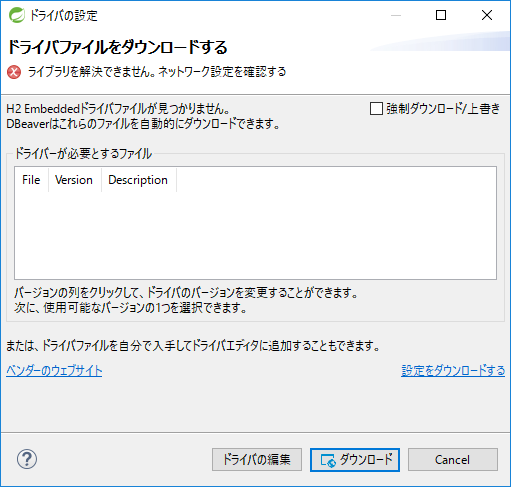

プロジェクトの作成
まず、Maven Archetype Pluginのmvn archetype:generateを利用して、プロジェクトを作成する。
ここでは、Windowsのコマンドプロンプトを使用してプロジェクトを作成する手順となっている。
mvn archetype:generateを利用してプロジェクトを作成する方法の詳細については、プロジェクトの作成を参照。
|
プロキシサーバの経由について
インターネット接続するためにプロキシサーバを経由する必要がある場合、STSのProxy設定と MavenのProxy設定をする。 |
プロジェクトを作成するディレクトリにて、以下のコマンドを実行する。
C:\xxx>mvn archetype:generate ^
-DarchetypeGroupId=com.github.macchinetta.blank ^
-DarchetypeArtifactId=macchinetta-batch-archetype ^
-DarchetypeVersion=2.2.0.RELEASEその後、以下を対話式に設定する。
| 項目名 | 設定例 |
|---|---|
groupId |
com.example.batch |
artifactId |
macchinetta-batch-tutorial |
version |
1.0.0-SNAPSHOT |
package |
com.example.batch.tutorial |
以下のとおり、mvnコマンドに対して「BUILD SUCCESS」が表示されることを確認する。
C:\xxx>mvn archetype:generate ^
More? -DarchetypeGroupId=com.github.macchinetta.blank ^
More? -DarchetypeArtifactId=macchinetta-batch-archetype ^
More? -DarchetypeVersion=2.2.0.RELEASE
[INFO] Scanning for projects…
[INFO]
[INFO] ------------------------------------------------------------------------
[INFO] Building Maven Stub Project (No POM) 1
[INFO] ------------------------------------------------------------------------
(.. omitted)
Define value for property 'groupId': com.example.batch
Define value for property 'artifactId': macchinetta-batch-tutorial
Define value for property 'version' 1.0-SNAPSHOT: : 1.0.0-SNAPSHOT
Define value for property 'package' com.example.batch: : com.example.batch.tutorial
Confirm properties configuration:
groupId: com.example.batch
artifactId: macchinetta-batch-tutorial
version: 1.0.0-SNAPSHOT
package: com.example.batch.tutorial
Y: : y
[INFO] ----------------------------------------------------------------------------
[INFO] Using following parameters for creating project from Archetype: macchinetta-batch-archetype:2.2.0.RELEASE
[INFO] ----------------------------------------------------------------------------
[INFO] Parameter: groupId, Value: com.example.batch
[INFO] Parameter: artifactId, Value: macchinetta-batch-tutorial
[INFO] Parameter: version, Value: 1.0.0-SNAPSHOT
[INFO] Parameter: package, Value: com.example.batch.tutorial
[INFO] Parameter: packageInPathFormat, Value: com/example/batch/tutorial
[INFO] Parameter: package, Value: com.example.batch.tutorial
[INFO] Parameter: groupId, Value: com.example.batch
[INFO] Parameter: artifactId, Value: macchinetta-batch-tutorial
[INFO] Parameter: version, Value: 1.0.0-SNAPSHOT
[INFO] Project created from Archetype in dir: C:\xxx\macchinetta-batch-tutorial
[INFO] ------------------------------------------------------------------------
[INFO] BUILD SUCCESS
[INFO] ------------------------------------------------------------------------
[INFO] Total time: 45.293 s
[INFO] Finished at: 2020-03-04T16:48:55+09:00
[INFO] Final Memory: 16M/197M
[INFO] ------------------------------------------------------------------------サンプルジョブを実行し、プロジェクトが正しく作成できたことを確認する。
C:\xxx>cd macchinetta-batch-tutorial
C:\xxx>mvn clean dependency:copy-dependencies -DoutputDirectory=lib package
C:\xxx>java -cp "lib/*;target/*" ^
org.springframework.batch.core.launch.support.CommandLineJobRunner ^
META-INF/jobs/job01.xml job01以下のとおり、mvnコマンドに対して「BUILD SUCCESS」、javaコマンドに対して「COMPLETED」が表示されることを確認する。
C:\xxx>cd macchinetta-batch-tutorial
C:\xxx\macchinetta-batch-tutorial>mvn clean dependency:copy-dependencies -Doutput
Directory=lib package
[INFO] Scanning for projects...
[INFO]
[INFO] ------------------------------------------------------------------------
[INFO] Building Maccinetta Batch Framework for Java (2.x) Blank Project 1.0.0-SN
APSHOT
[INFO] ------------------------------------------------------------------------
(.. omitted)
[INFO] ------------------------------------------------------------------------
[INFO] BUILD SUCCESS
[INFO] ------------------------------------------------------------------------
[INFO] Total time: 9.462 s
[INFO] Finished at: 2020-03-04T16:53:06+09:00
[INFO] Final Memory: 26M/211M
[INFO] ------------------------------------------------------------------------
C:\xxx\macchinetta-batch-tutorial>java -cp "lib/*;target/*" ^
More? org.springframework.batch.core.launch.support.CommandLineJobRunner ^
More? META-INF/jobs/job01.xml job01
[2020/03/04 16:58:46] [main] [o.s.c.s.PostProcessorRegistrationDelegate$BeanPostProcessorChecker] [INFO ] Bean 'jobRegistry' of type [org.springframework.batch.core.configuration.support.MapJobRegistry] is not eligible for getting processed by all BeanPostProcessors (for example: not eligible for auto-proxying)
(.. ommited)
[2020/03/04 16:58:50] [main] [o.s.b.c.l.s.SimpleJobLauncher] [INFO ] Job: [FlowJob: [name=job01]] launched with the following parameters: [{jsr_batch_run_id=1}]
[2020/03/04 16:58:50] [main] [o.s.b.c.j.SimpleStepHandler] [INFO ] Executing step: [job01.step01]
[2020/03/04 16:58:50] [main] [o.s.b.c.s.AbstractStep] [INFO ] Step: [job01.step01] executed in 100ms
[2020/03/04 16:58:50] [main] [o.s.b.c.l.s.SimpleJobLauncher] [INFO ] Job: [FlowJob: [name=job01]] completed with the following parameters: [{jsr_batch_run_id=1}] and the following status: [COMPLETED] in 228msプロジェクトのインポート
作成したプロジェクトをSTSへインポートする。
STSのメニューから、[File] → [Import] → [Maven] → [Existing Maven Projects] → [Next]を選択し、archetypeで作成したプロジェクトを選択する。
Root DirectoryにC:\xxx\macchinetta-batch-tutorialを設定し、Projectsにcom.example.batchのpom.xmlが選択された状態で、 [Finish]を押下する。
インポートが完了すると、Package Explorerに次のようなプロジェクトが表示される。
|
インポート後にビルドエラーが発生する場合
インポート後にビルドエラーが発生する場合は、プロジェクト名を右クリックし、「Maven」→「Update Project…」をクリックし、 「OK」ボタンをクリックすることでエラーが解消されるケースがある。 |
|
パッケージの表示形式の設定
パッケージの表示形式は、デフォルトは「Flat」だが、「Hierarchical」にしたほうが見通しがよい。 |
プロジェクトの構成
プロジェクトの構成については、Macchinetta Batch 2.x 開発ガイドライン本編のプロジェクトの構成を参照。
設定ファイルの確認・編集
設定ファイルの確認
作成したプロジェクトにはSpring BatchやMyBatisなどの設定のほとんどが既に設定済みである。
作成したプロジェクトの設定ファイルについてはプロジェクトの構成を参照。
|
設定値のカスタマイズについて
チュートリアルを実施する場合にユーザの状況に応じてカスタマイズが必要な設定値について理解する必要はないが、チュートリアルを実施する前または後に一読するとよい。 詳細についてはアプリケーション全体の設定を参照。 |
設定ファイルの編集
チュートリアルを実施するため、H2 Databaseの設定を変更する。設定の変更点を以下に示す。
-
手動でサーバを起動することなく複数のバッチアプリケーションのプロセスからデータベースへ接続可能とする。
-
バッチアプリケーションのプロセスの終了後でもデータを保持した状態のデータベースへ接続可能とする。
なお、H2 Databaseの設定の詳細については H2の公式ドキュメントのFeatures を参照。
具体的な編集内容を以下に示す。
batch-application.propertiesを開き、admin.jdbc.url及びjdbc.urlを以下のように編集する。
下記の例は分かりやすさのために編集対象行のみ記載し、上書きではなくコメントアウトをした上で新たに行を追加している。
## Application settings.
# Admin DataSource settings.
#admin.jdbc.url=jdbc:h2:mem:batch-admin;DB_CLOSE_DELAY=-1
admin.jdbc.url=jdbc:h2:~/batch-admin;AUTO_SERVER=TRUE
# Job DataSource settings.
#jdbc.url=jdbc:h2:mem:batch;DB_CLOSE_DELAY=-1
jdbc.url=jdbc:h2:~/batch-admin;AUTO_SERVER=TRUE|
admin.jdbc.urlとjdbc.urlにおいて同じdatabaseName(batch-admin)を指定している理由
チュートリアルを実施する際のJDBCドライバの接続設定では、 アプリケーション全体の設定に記載してあるとおり、 本来はFWとジョブ個別が使用するデータベースは分けるのが好ましい。 |
入力データの準備
データベースアクセスでデータ入出力を行うジョブの入力データ
データベースアクセスでデータ入出力を行うジョブで使用する入力データの準備を行う。
なお、データベースアクセスでデータ入出力を行うジョブを作成しない場合は実施する必要はない。
入力データの準備は以下の流れで行う。
これらの設定を行うことにより、ジョブ実行時(ApplicationContext生成時)にスクリプトを実行し、データベースの初期化を行う。
テーブル作成・初期データ挿入スクリプト作成
テーブル作成・初期データ挿入スクリプトの作成を行う。
プロジェクトルートディレクトリにsqlsディレクトリを作成し、下記の3つのスクリプトを格納する。
-
テーブル作成スクリプト(
create-member-info-table.sql) -
初期データ(正常)挿入スクリプト(
insert-member-info-data.sql) -
初期データ(異常)挿入スクリプト(
insert-member-info-error-data.sql)
作成するファイルの内容を以下に示す。
CREATE TABLE IF NOT EXISTS member_info (
id CHAR(8),
type CHAR(1),
status CHAR(1),
point INT,
PRIMARY KEY(id)
);TRUNCATE TABLE member_info;
INSERT INTO member_info (id, type, status, point) VALUES ('00000001', 'G', '1', 0);
INSERT INTO member_info (id, type, status, point) VALUES ('00000002', 'N', '1', 0);
INSERT INTO member_info (id, type, status, point) VALUES ('00000003', 'G', '0', 10);
INSERT INTO member_info (id, type, status, point) VALUES ('00000004', 'N', '0', 10);
INSERT INTO member_info (id, type, status, point) VALUES ('00000005', 'G', '1', 100);
INSERT INTO member_info (id, type, status, point) VALUES ('00000006', 'N', '1', 100);
INSERT INTO member_info (id, type, status, point) VALUES ('00000007', 'G', '0', 1000);
INSERT INTO member_info (id, type, status, point) VALUES ('00000008', 'N', '0', 1000);
INSERT INTO member_info (id, type, status, point) VALUES ('00000009', 'G', '1', 10000);
INSERT INTO member_info (id, type, status, point) VALUES ('00000010', 'N', '1', 10000);
INSERT INTO member_info (id, type, status, point) VALUES ('00000011', 'G', '0', 100000);
INSERT INTO member_info (id, type, status, point) VALUES ('00000012', 'N', '0', 100000);
INSERT INTO member_info (id, type, status, point) VALUES ('00000013', 'G', '1', 999901);
INSERT INTO member_info (id, type, status, point) VALUES ('00000014', 'N', '1', 999991);
INSERT INTO member_info (id, type, status, point) VALUES ('00000015', 'G', '0', 999900);
INSERT INTO member_info (id, type, status, point) VALUES ('00000016', 'N', '0', 999990);
INSERT INTO member_info (id, type, status, point) VALUES ('00000017', 'G', '1', 10);
INSERT INTO member_info (id, type, status, point) VALUES ('00000018', 'N', '1', 10);
INSERT INTO member_info (id, type, status, point) VALUES ('00000019', 'G', '0', 100);
INSERT INTO member_info (id, type, status, point) VALUES ('00000020', 'N', '0', 100);
INSERT INTO member_info (id, type, status, point) VALUES ('00000021', 'G', '1', 1000);
INSERT INTO member_info (id, type, status, point) VALUES ('00000022', 'N', '1', 1000);
INSERT INTO member_info (id, type, status, point) VALUES ('00000023', 'G', '0', 10000);
INSERT INTO member_info (id, type, status, point) VALUES ('00000024', 'N', '0', 10000);
INSERT INTO member_info (id, type, status, point) VALUES ('00000025', 'G', '1', 100000);
INSERT INTO member_info (id, type, status, point) VALUES ('00000026', 'N', '1', 100000);
INSERT INTO member_info (id, type, status, point) VALUES ('00000027', 'G', '0', 1000000);
INSERT INTO member_info (id, type, status, point) VALUES ('00000028', 'N', '0', 1000000);
INSERT INTO member_info (id, type, status, point) VALUES ('00000029', 'G', '1', 999899);
INSERT INTO member_info (id, type, status, point) VALUES ('00000030', 'N', '1', 999989);
COMMIT;TRUNCATE TABLE member_info;
INSERT INTO member_info (id, type, status, point) VALUES ('00000001', 'G', '0', 0);
INSERT INTO member_info (id, type, status, point) VALUES ('00000002', 'N', '0', 0);
INSERT INTO member_info (id, type, status, point) VALUES ('00000003', 'G', '1', 10);
INSERT INTO member_info (id, type, status, point) VALUES ('00000004', 'N', '1', 10);
INSERT INTO member_info (id, type, status, point) VALUES ('00000005', 'G', '0', 100);
INSERT INTO member_info (id, type, status, point) VALUES ('00000006', 'N', '0', 100);
INSERT INTO member_info (id, type, status, point) VALUES ('00000007', 'G', '1', 1000);
INSERT INTO member_info (id, type, status, point) VALUES ('00000008', 'N', '1', 1000);
INSERT INTO member_info (id, type, status, point) VALUES ('00000009', 'G', '0', 10000);
INSERT INTO member_info (id, type, status, point) VALUES ('00000010', 'N', '0', 10000);
INSERT INTO member_info (id, type, status, point) VALUES ('00000011', 'G', '1', 100000);
INSERT INTO member_info (id, type, status, point) VALUES ('00000012', 'N', '1', 100000);
INSERT INTO member_info (id, type, status, point) VALUES ('00000013', 'G', '1', 1000001);
INSERT INTO member_info (id, type, status, point) VALUES ('00000014', 'N', '1', 999991);
INSERT INTO member_info (id, type, status, point) VALUES ('00000015', 'G', '1', 999901);
COMMIT;ジョブ実行時にスクリプトを自動実行する設定の追加
ジョブ実行時(ApplicationContext生成時)にスクリプトを実行し、データベースの初期化を行うため、<jdbc:initialize-database>要素の定義を追加する。
以下の2つのファイルの編集を実施する。
-
batch-application.propertiesに実行対象スクリプトのパスの設定を追加する
-
launch-context.xmlに
<jdbc:initialize-database>要素の定義を追加する
具体的な設定内容を以下に示す。
batch-application.propertiesを開き、末尾に以下の実行対象スクリプトのパスの設定を追加する。
-
tutorial.create-table.script(テーブル作成スクリプトのパス)
-
tutorial.insert-data.script(初期データ挿入スクリプトのパス)
初期データ挿入スクリプトのパスは、実行するスクリプトの切替を容易にするために正常データと異常データを同じプロパティ名で定義し、コメントアウトしている。
# Database Initialize
tutorial.create-table.script=file:sqls/create-member-info-table.sql
tutorial.insert-data.script=file:sqls/insert-member-info-data.sql
#tutorial.insert-data.script=file:sqls/insert-member-info-error-data.sqllaunch-context.xmlを開き、<beans>要素内に<jdbc:initialize-database>要素の定義を追加する。
<!-- database initialize definition -->
<jdbc:initialize-database data-source="jobDataSource" enabled="${data-source.initialize.enabled:false}" ignore-failures="ALL">
<jdbc:script location="${tutorial.create-table.script}" />
<jdbc:script location="${tutorial.insert-data.script}" />
</jdbc:initialize-database>ファイルアクセスでデータ入出力を行うジョブの入力データ
ファイルアクセスでデータ入出力を行うジョブで使用する入力データの準備を行う。
なお、ファイルアクセスでデータ入出力を行うジョブを作成しない場合は実施する必要はない。
入力データの準備は入出力ファイルを格納ディレクトリの作成及び入力ファイルの作成を行う。
プロジェクトルートディレクトリに入出力ファイル格納用として以下の2ディレクトリを作成する。
-
files/input -
files/output
files/input配下に以下の2ファイルを作成する。
-
正常データ入力ファイル(
input-member-info-data.csv) -
異常データ入力ファイル(
input-member-info-error-data.csv)
作成した入力ファイル格納ディレクトリに以下の内容で入力ファイルを格納する。
作成するファイルの内容を以下に示す。
00000001,G,1,0
00000002,N,1,0
00000003,G,0,10
00000004,N,0,10
00000005,G,1,100
00000006,N,1,100
00000007,G,0,1000
00000008,N,0,1000
00000009,G,1,10000
00000010,N,1,10000
00000011,G,0,100000
00000012,N,0,100000
00000013,G,1,999901
00000014,N,1,999991
00000015,G,0,999900
00000016,N,0,999990
00000017,G,1,10
00000018,N,1,10
00000019,G,0,100
00000020,N,0,100
00000021,G,1,1000
00000022,N,1,1000
00000023,G,0,10000
00000024,N,0,10000
00000025,G,1,100000
00000026,N,1,100000
00000027,G,0,1000000
00000028,N,0,1000000
00000029,G,1,999899
00000030,N,1,99998900000001,G,0,0
00000002,N,0,0
00000003,G,1,10
00000004,N,1,10
00000005,G,0,100
00000006,N,0,100
00000007,G,1,1000
00000008,N,1,1000
00000009,G,0,10000
00000010,N,0,10000
00000011,G,1,100000
00000012,N,1,100000
00000013,G,1,1000001
00000014,N,1,999991
00000015,G,1,999901STSからデータベースを参照する準備
チュートリアルでは、STS上でデータベースの参照やSQL実行を行うためにDBeaverを使用する。
DBeaverでデータベースへ接続するまでの手順は以下のとおり。
チュートリアルで参照するデータベースの対象は以下のとおり。
-
JobRepositoryに永続化されているバッチアプリケーション実行結果や状態を管理するためのデータ
-
データベースアクセスでデータ入出力を行うジョブが使用するデータ
DBeaverのインストール
ここでは、DBeaverのインストールを説明する。
-
STSのメニューバーから、[Help] → [Install New Software…] を選択して[Install]ウィンドウを開く。
-
[Work with]フォームに
https://dbeaver.io/update/latest/を入力し、[Enter]キーを押下する。 -
[DBeaver]と[DBeaver IDE]にチェックし、[Next >]を押下する。
-
インストール対象に[DBeaver IDE]があることを確認し、[Next >]を押下する。
-
[Licenses text]を確認して、[I accept the terms of the license agreement]にチェックし、[Finish]を押下する。
-
インストール完了後、STSを再起動する。
-
STSのメニューバーに[SQLエディタ]と[データベース]があることを確認する。
DBeaverのデータベース接続設定
ここでは、DBeaverでデータベースに接続するための設定を説明する。
-
STSのメニューバーから、[データベース] → [新しい接続]を選択して[新しい接続を作成する]ウィンドウを開く。
-
フォームに
H2を入力し、サイドメニューから[All]を選択する。 -
[H2 Embedded]を選択し、[Next >]を押下する。
-
[Edit Driver Settings]を押下し、[ドライバーの編集H2 Embedded']ウインドウを開く。
-
[URLテンプレート]フォームに
jdbc:h2:~/batch-admin;AUTO_SERVER=TRUEを入力する。 -
[Allow Empty Password]にチェックする。
-
[ファイルの追加]から
C:\xxx\macchinetta-batch-tutorial\lib\h2-1.4.200.jarを選択し、[開く]を押下する。 -
[クラスを見つける]を押下し、[ドライバクラス]で[org.h2.Driver]を選択する。
|
H2 Databaseのjarが格納されている場所
H2 Databaseのjarは、プロジェクトのルートディレクトリの |
-
下表のとおりフォームに値を入力し、[Save password locally]のチェックをはずす。
| フォーム | 値 |
|---|---|
データベース/スキーマ |
macchinetta-batch-tutorial |
ユーザ名 |
sa |
-
[テスト接続]を押下する。
-
[ユーザ資格情報]の入力を要求するウインドウが出た場合、[ユーザ名]フォームに
saを入力し、[OK]を押下する。
[パスワード]フォームには値を入力しない。
|
ドライバファイルをダウンロードする
H2 Embeddedドライバファイルが見つからず、以下のウインドウが表示された場合、[ダウンロード]を押下する。

図 11. Download Driver
|
-
Connection Testのようなウインドウが表示され、接続できたことを確認し、[Finish]を押下する。
以上でSTSからデータベースを参照する準備が完了した。
プロジェクトの動作確認
プロジェクトの動作確認の手順を以下に示す。
STSでジョブを実行する
STSでジョブを実行する手順を以下に示す。
|
ジョブの実行方法について
本来であればジョブはシェルスクリプトなどから実行するが、本チュートリアルでは説明のしやすさからSTSでジョブを実行する手順としている。 |
Run Configuration(実行構成)の作成
Run Configuration(実行構成)を作成する方法についてサンプルジョブの実行を例にして説明する。
-
STSのメニューから、[Run] → [Run Configurations…]を押下し、[Run Configurations]を開く。
-
サイドバーの[Java Application]を右クリックで[New]を選択し、Run Configuration作成画面を表示して下表のとおり値を入力する。
| 項目名 | 値 |
|---|---|
Name |
Execute Job01 |
Project |
macchinetta-batch-tutorial |
Main class |
org.springframework.batch.core.launch.support.CommandLineJobRunner |
-
[Arguments]タブを開き、下表のとおり値を入力する。
| 項目名 | 値 |
|---|---|
Program arguments |
META-INF/jobs/job01.xml job01 |
-
[Apply]を押下する。
|
Run Configurationの作成で設定する値について
Run Configurationにサンプルジョブの実行(正しく作成できたことの確認)のコマンドと同様のパラメータを設定する。 |
ジョブの実行と結果の確認
ジョブの実行及び結果の確認方法について説明する。
ここで説明するジョブの実行結果の確認とはコンソールログの確認及びジョブ実行の終了コードの確認である。
チュートリアルではジョブ実行の終了コードを確認するため、Debug Viewを使用する。Debug Viewの表示方法は後述する。
|
Debug Viewを表示する理由
STSでDebug Viewを表示しないとジョブの実行時の終了コードを確認することはできない。 |
-
STSのメニューから、[Run] → [Run Configurations…]を押下し、[Run Configurations]を開く。
-
サイドバーの[Java Application]配下にあるRun Configuration(実行構成)の作成にて作成した[Execute Job01]を選択して[Run]を押下する。
-
ジョブの実行結果を[Console]で確認する。
以下ようなコンソールログが[Console]に表示されていれば正常にジョブが実行されている。
[2020/03/06 09:41:13] [main] [o.s.b.c.l.s.SimpleJobLauncher] [INFO ] Job: [FlowJob: [name=job01]] completed with the following parameters: [{jsr_batch_run_id=48}] and the following status: [COMPLETED] in 125ms-
STSのメニューから、[Window] → [Show View] → [Other…]を選択し、[Debug]配下の[Debug]を選択した状態で[OK]を押下する。
-
[Debug]でジョブ実行の終了コードを確認する。
<terminated, exit value: 0>という表示のジョブ実行の終了コードが0であることから、ジョブが正常に終了したことを確認できる。
|
STSでジョブの実行が失敗する場合について
正しいソースコードにもかかわらずSTSでジョブの実行が失敗する場合、不完全なビルド状態を解消することによりジョブの実行が成功する可能性がある。手順を以下に示す。 |
DBeaverを使用してデータベースを参照する
ここでは、DBeaverを使用してデータベースを参照する方法について説明する。
-
STSのメニューから、[Window] → [Show View] → [Other…]を選択し、[データベース]配下の[Database Browser]を選択した状態で[OK]を押下する。
-
[Database Browser]にて[H2 Server -macchinetta-batch-tutorial] → [PUBLIC] → [テーブル]を開き、テーブル一覧を確認する。
Spring Batchメタデータテーブル(詳細はJobRepositoryのメタデータスキーマを参照)及び、データベースアクセスでデータ入出力を行うジョブの入力データの準備を実施した場合にはMEMBER_INFOテーブルが作成されていることが確認できる。
-
参照したいテーブルをダブルクリックし、開いたViewの[データ]タブを選択することでテーブルに格納されているレコードを参照する。
以下はBATCH_JOB_EXECUTIONテーブルを参照した例である。
job01という名前のジョブが実行されたことがわかる。
以上でチュートリアルの環境構築は完了である。